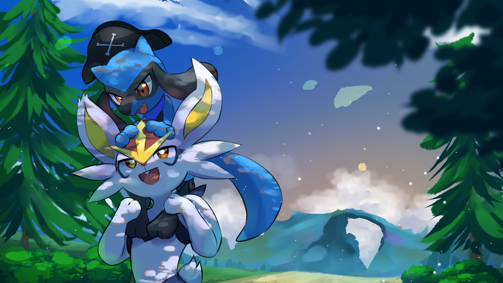

Between Two Worlds
Home
Chapters
Gallery
Spicy
Discord
Characters
Social
Inbox
Log In / Register

← Back to Chapters
Prologue
Between Two Worlds
Lights. Cameras. Doomed yaoi.
📖 Read on Archive of Our Own
📖 Read on Wattpad
📄 Read as PDF
← Back to Prologue
⬇ Download